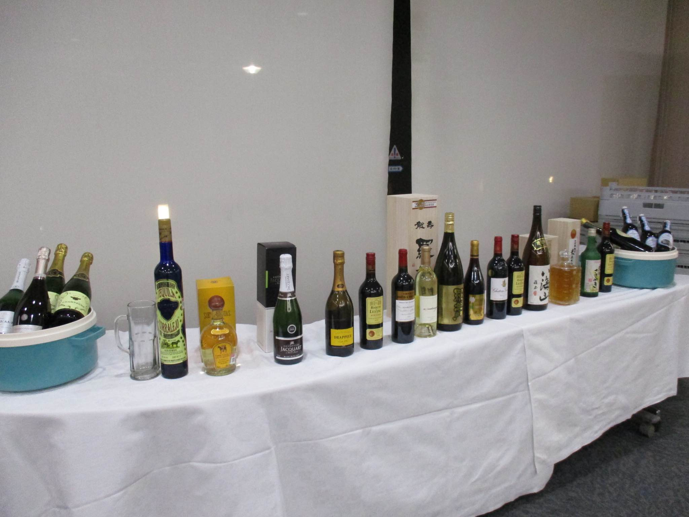
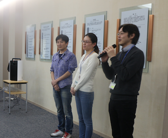
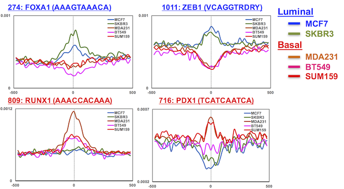

中太さんの歓迎会を開催しました
とても遅くなってしまいましたが、2月から当プロジェクトに参加して頂いている中太さんの歓迎会を、近場でささやかに開催しました。中太さんは丸山にはないものをたくさん持っており、これから臨床から基礎までつながるような幅の広い研究ができるだろうと大変期待しています。HP上に研究紹介なども載せていきます。バリバリの基礎研究にご興味のある方もぜひご連絡ください!
丸山研究室の近況をお知らせします。
とても遅くなってしまいましたが、2月から当プロジェクトに参加して頂いている中太さんの歓迎会を、近場でささやかに開催しました。中太さんは丸山にはないものをたくさん持っており、これから臨床から基礎までつながるような幅の広い研究ができるだろうと大変期待しています。HP上に研究紹介なども載せていきます。バリバリの基礎研究にご興味のある方もぜひご連絡ください!
順天堂大学で毎月開催されているお茶の水がん学アカデミア第142回集会で、研究内容について紹介させて頂きました。平日の遅い時間にも関わらず多くの皆様が聴いてくださり、有用なご意見も頂きました。貴重な機会を頂きありがとうございました。
の研究所にあるBioMarkHDを使用してみました。手持ちの乳癌細胞株のcDNA16種類(のtriplicate)x48種類のプライマーのリアルタイムPCRを一度に施行しました。必要とする検体の量が少ないため、特に臨床検体の解析・簡単なプロファイリングにとても有用と思いました。
「頭脳循環を加速する戦略的国際研究ネットワーク推進プログラム」の一環として名古屋市立大学で開催された上記シンポジウムに参加しました。公的研究費を海外留学や海外ラボとのコラボレーションに使うことができる、とても有効で素晴らしいプログラムであると感じました。会ではシンガポールのGenome Institute of Singapore (GIS)の方々とお話することができ、感銘を受けました。特にシングルセル研究の進展に驚きました(The GIS-Fluidigm Single-Cell Omics Centre (SCOC))。貴重な機会を頂き感謝申し上げます。
とりあえず、とにかく、やってみようということで、念願のシングルセルのATAC-seqを試みました。まだ、ここに載せれるような綺麗な結果は出ていませんが、やってみなければ分からないことがたくさんあり、とても勉強になりました。自ら経験してみることで、シングルセル解析の理解が深まった気がします。難しさと面白さが分かりました。他にもいろいろと試しています。いつか臨床検体でこの解析ができるよう、挑戦を続けたいと思います！
2月8日、聖マリアンナ医科大学第74回Marianna Research Council(MRC)において「トリプルネガティブ乳がんにおけるエピゲノム多様性の解析の試み」というタイトルで、講演をさせて頂きました。稚拙な発表ではありましたが、乳腺外科、病理部、内科の先生方から多くのご質問・ご指摘を頂き、大変勉強になりました。お忙しい中、会場に来て頂いた先生方、懇親会にご参加頂いた先生方、そしてお声をかけて下さった太田智彦先生、ありがとうございました。感謝申し上げます。次に機会があれば、もっとexcitingな結果を発表できるよう、日々研究に励みたいと思います。
2月1日から、当研究室の研究員として中太智義さんが仲間に加わりました。中太さんは生粋の生化学者であり、転写研究のスペシャリストです。当研究室の研究の幅が大きく広がることを期待しています!
研究所、化療センター、CPMセンター合同によるがん研冬の研究発表会が開催されました。各部・プロジェクトのPIが、今年一年の成果や今後の展望について発表しました。当プロジェクトはまだ成果が出ていないですが、現在行なっているATAC-seq解析の進捗状況や今後の計画を発表しました。発表後、非常に貴重で有益なsuggestionを頂き、モチベーションがあがりました。がんのheterogeneityを4次元で理解し、背景にあるbiology, pathologyを明らかにできればと思います。発表会に引き続き合同の忘年会が開催され、所内や病院の多くの方と交流できました。
 緻密な実験と膨大なデータによる検証と新発見、とても感動しました。非常に多くの質疑応答があり盛り上がりました。セミナーをして頂いた中太さん、聞きに来て下さった皆様、開催までの準備をお手伝い頂いた関係者の方々に感謝申し上げます。
ATAC-seqのデータを使ってモチーフ解析を行いました。なかなか面白いです。これによりトリプルネガティブ乳がんを層別化できるかもしれません。また、これをシングルセルでできたらとてもexcitingだと思いました。
がんのバイオロジーの本質を理解することにより、がん診療に貢献しうる知見を見出すことを目標としています。